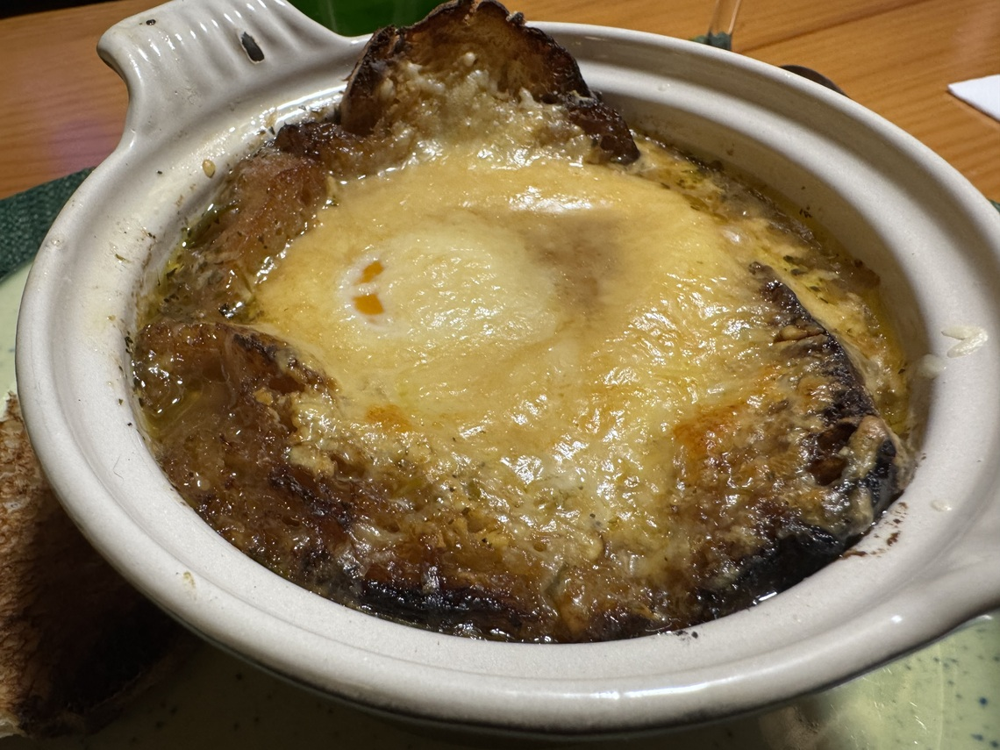
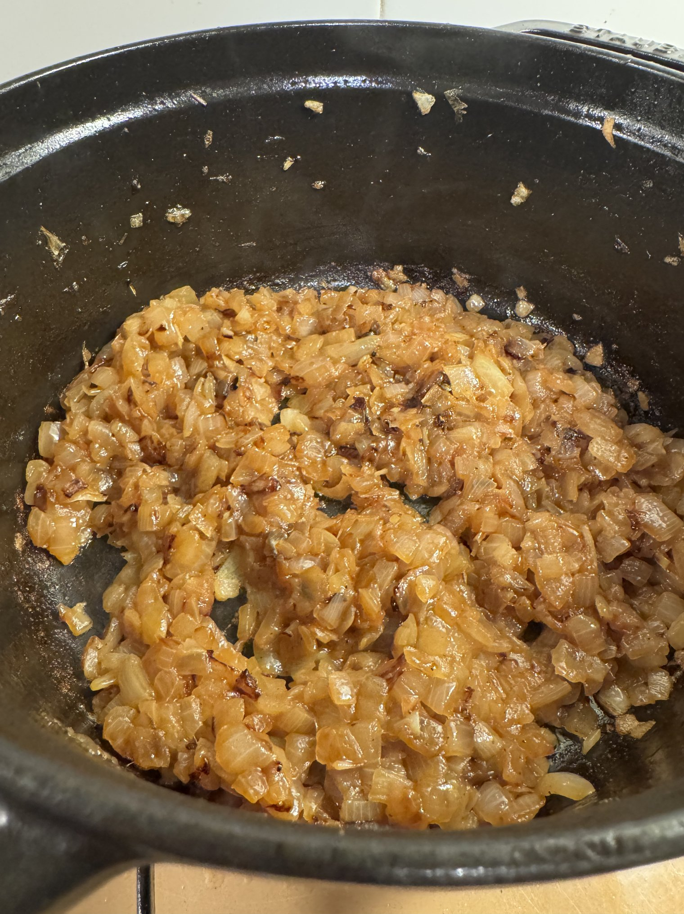

Soupe à l'oignon
Ingredients
4×
- 4 oignons
- 50 g de beurre
- 1 c. à s. d'huile
- 1 c. à s. de farine
- 1 l d'eau chaude
- 25 cl de vin blanc
- 6 tranches de pain
- 4 petits bols
- comté râpé

Un classique de l’hiver qui fait toujours plaisir.
Préparation
Étape 1
Peler et émincer les 4 oignons.
Étape 2
Les cuire dans 50 g de beurre et 1 c. à s. d'huile jusqu’à ce qu’ils soient tendres et bien dorés.

Étape 3
Saupoudrer le mélange de 1 c. à s. de farine, mouiller avec 1 l d'eau chaude et 25 cl de vin blanc et assaisonner.
Étape 4
Couvrir et laisser bouillonner doucement pendant 20 minutes.
Étape 5
Griller 6 tranches de pain.
Étape 6
Disposer chaque tranche dans le fond de 4 petits bols individuels supportant le passage au four.
Étape 7
Saupoudrer d’un peu de comté râpé. Verser la soupe par-dessus.
Saupoudrer à nouveau de fromage et gratiner.
Conseils
-
Remplacer l’eau par du bouillon.
-
Tartiner les tranches de pain de moutarde.
-
Casser un oeuf dans le bol de soupe avant d’ajouter le fromage râpé.